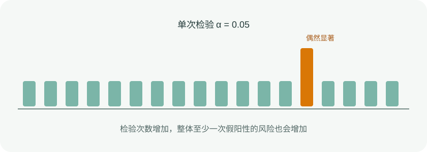

如果一次检验有 5% 的假阳性风险，同时做 20 次独立检验，至少出现一次假阳性的概率仍然是 5% 吗？不是。分析次数本身会改变整体错误率。
多重比较的核心问题很简单：你做比较的次数越多，纯靠随机因素得到"显著"结果的可能性就越大。就像一个赌徒如果连续赌100次，总有一次会赢。问题是——赌徒知道自己在赌，但数据分析师常常不承认自己在"赌"。

16.1 多重比较问题：为什么不能同时做20个t检验
假设你有一个新药，你要比较它和安慰剂的效果。你只测一个指标——血压下降量。你用t检验，显著性水平设定为α=0.05。这意味着：如果药真的无效，你错误地得出"有效"结论的概率是5%。
但如果你同时测量20个指标——血压、心率、血糖、胆固醇、体重、睡眠质量、抑郁评分、焦虑评分、头痛频率、肌肉酸痛……然后对每一个指标做独立t检验——会发生什么？
即使药物完全无效，每个检验仍有5%的概率出错。20个检验同时不出错的概率是：(1 - 0.05)^20 ≈ 0.36。也就是说，你犯至少一次第一类错误（假阳性）的概率高达：1 - 0.36 = 64%。
这就是族系错误率（Familywise Error Rate, FWER）的概念——一系列检验中至少出现一次假阳性的概率。公式很简单：
FWER = 1 - (1 - α)^m
其中m是比较的次数，α是每次比较的显著性水平。
| 比较次数 (m) | 单次α=0.05时的FWER | 含义 |
|---|---|---|
| 1 | 5.0% | 一个检验，这是我们能接受的 |
| 5 | 22.6% | 超过1/5的概率至少搞错一次 |
| 10 | 40.1% | 接近一半！ |
| 20 | 64.2% | 大部分研究者不会报告他们做了20个检验 |
| 100 | 99.4% | 几乎必然至少有一个"显著"的假结果 |
⚠️ 踩坑故事：我见过一家数据团队做A/B测试，同时监控了50多个业务指标。他们的规则是"只要任一指标显著就判断实验有效"。结果呢？几乎所有实验都"显著"——因为只要样本量够大，50个指标里总有几个会被随机波动推到p<0.05。他们报喜不报忧，产品经理根据这些"显著结果"做了一大堆无效的产品迭代。直到我帮他们做审计时才发现：这些"显著提升"的指标在下一个季度的数据里全部消失了。这不是产品有效，这是多重比较骗了自己。
16.2 Bonferroni校正与FDR控制
既然多重比较有问题，那怎么解决呢？最经典的方法就是Bonferroni校正。
Bonferroni校正的思路极其简单粗暴：你要做m次比较，那就把每次比较的显著性阈值除以m。也就是说，不再是p<0.05才算显著，而是p<0.05/m才算显著。
比如你做20次比较：p需要小于0.05/20 = 0.0025才算显著。这保证了整个FWER不超过0.05。
Bonferroni的优点是简单、通用、严格。但缺点也很明显——太过保守。当你做很多比较时（比如1000次），Bonferroni会把阈值压到0.00005，很可能把真正有效的信号也误杀了。这在基因数据、fMRI脑成像这些"大规模比较"场景中尤其致命。
于是有了另一个重要的概念——错误发现率（False Discovery Rate, FDR），由Benjamini和Hochberg在1995年提出。
FDR的想法和FWER不同：
- FWER：严格控制"至少犯一次错"的概率
- FDR：控制"在报告为显著的结果中，错误的比例"
换个更直观的说法：FWER说"我要确保我几乎没有搞错的时候"，FDR说"我接受被拒绝的结果中有一定比例是错的，只要这个比例不高就行"。
Benjamini-Hochberg（BH）过程是这样操作的：
- 把所有p值从小到大排序：p₁ ≤ p₂ ≤ p₃ ≤ ... ≤ p_m
- 对每个p值，计算阈值：q × (i / m)，其中q是目标FDR水平（通常是0.05或0.1）
- 找到最大的k使得 p_k ≤ q × (k / m)
- 拒绝所有从1到k的假设
实战选择：在实际工作中，我遵循一个简单规则——如果你做少量比较（≤10个），用Bonferroni，因为它严格且易于解释。如果你做大量比较（比如基因表达数据中有几万个基因），用FDR控制，因为Bonferroni会太过保守导致零发现。在A/B测试场景中，我推荐预先指定主要指标（primary endpoint），只对它做正式检验，其他指标作为"探索性分析"呈现——这样根本不需要校正。
16.3 辛普森悖论：分组看是正相关，合并看是负相关
如果说多重比较是"做太多检验带来的问题"，辛普森悖论就是"做太少检验带来的问题"——或者说，做错了检验带来的问题。
辛普森悖论（Simpson's Paradox）：当数据被分组后，每组内部显示一个趋势，但把所有组的数据合并后，趋势完全反转。
最著名的例子是1973年UC Berkeley性别歧视案。那年，伯克利大学研究生院的录取数据显示：男生录取率为44%，女生录取率仅35%——差了将近10个百分点。这看起来像是系统性的性别歧视。
但当研究者按院系分组分析时，奇迹发生了：在大多数院系里，女生的录取率反而略高于男生。著名的"歧视"实际上是一个辛普森悖论——女生更多地申请录取率低的院系（比如英语系），而男生更多地申请录取率高的院系（比如工程系）。
用Python模拟一下这个现象：
import pandas as pd
# 模拟伯克利录取数据（简化版）
data = {
'院系': ['工程系']*200 + ['英语系']*200,
'性别': (['男']*150 + ['女']*50) + (['男']*50 + ['女']*150),
'录取': (
[1]*90 + [0]*60 + # 工程系男生：60%录取
[1]*25 + [0]*25 + # 工程系女生：50%录取
[1]*25 + [0]*25 + # 英语系男生：50%录取
[1]*60 + [0]*90 # 英语系女生：40%录取
)
}
df = pd.DataFrame(data)
# 合并数据：看起来歧视女性？
overall = df.groupby('性别')['录取'].mean()
print("=== 合并数据 ===")
print(overall)
print(f"男生录取率 - 女生录取率 = {overall['男'] - overall['女']:.2%}")
# 分组看：每个系都是女生录取率更高或持平
by_dept = df.groupby(['院系','性别'])['录取'].mean()
print("\n=== 按院系分组 ===")
print(by_dept)
# 结论：分组看女生并没有被歧视，合并看反而显示歧视！
# 这是因为女生集中在录取率更低的院系辛普森悖论的普遍教训是：聚合数据可能会误导人。当你看到总体趋势时，一定要问自己：这个趋势在不同子群中都一致吗？有没有一个隐藏的"分组变量"在起作用？
应对辛普森悖论：在数据分析中，这不是一个能"解决"的问题——它永远可能发生。你能做的是：(1) 在做统计建模时加入你认为重要的分组变量作为协变量；(2) 对结果做敏感性分析，看看加入不同变量后结论是否稳定；(3) 最重要的是——永远保持怀疑，不要轻易相信聚合数据给出的单一结论。
16.4 幸存者偏差：二战装甲钢板的经典故事
如果说有一个统计谬误被引用得最多、误解得也最多，那就是幸存者偏差（Survivorship Bias）。这个概念的起源故事本身就是一堂绝佳的统计学课。
二战期间，美国军方请统计学家Abraham Wald分析返航轰炸机上的弹孔分布，目的是决定在哪里加装更多装甲。军方工程师的直觉是：弹孔最密集的地方（机翼、机尾）需要加厚装甲——因为这些地方被击中最多。
但Wald说了一句话，改变了历史的走向："你们看到的弹孔，只是那些成功返航的飞机上的弹孔。那些被击中要害的飞机已经坠毁了，你们根本看不到。"被击中的关键部位——发动机、驾驶舱——恰恰弹孔最少，因为被打中那里的飞机都没能飞回来。
Wald的建议是：在弹孔最少的地方加装甲——因为那些地方才是"致命伤"。军方采纳了他的建议，显著降低了飞机的战损率。
幸存者偏差在我们的日常数据中无处不在：
| 领域 | 幸存者偏差的表现 | 真相 |
|---|---|---|
| 基金投资 | 只关注存活下来的优秀基金 | 大量亏损基金已经清盘了，不再出现在样本中 |
| 创业成功学 | 分析成功企业的共同特征 | 失败企业可能也有同样的特征，只是没人分析 |
| 用户评论 | "这个产品很差"的极端评论居多 | 普通满意用户通常不写评论 |
| 学术发表 | 已发表的论文全是"显著"结果 | 不显著的结果在文件抽屉里（回到第15章） |
⚠️ 幸存者偏差的陷阱：我在做量化策略研究时犯过这个错。我把过去5年的股票数据跑了一遍，筛选出了一组"稳定跑赢大盘"的策略。看起来很厉害对吧？但我忘了一件事——那些跑输的策略在筛选过程中被我淘汰了，它们的历史表现没有进入我的样本。这不是策略好，这只是回溯测试中的幸存者偏差。后来在实盘中，这些"优秀策略"的表现和抛硬币差不多。
16.5 大数据时代的多重比较噩梦
你可能觉得多重比较问题只是学术界的杞人忧天。但让我告诉你，在大数据时代，它是每个数据分析师每天都要面对的恶魔。
来看看大数据环境下的多重比较挑战有多夸张：
- 基因关联研究（GWAS）：一次分析数百万个基因变异，Bonferroni阈值要到p<5×10⁻⁸
- fMRI脑成像：一次扫描涉及数万个voxel（体素），需要FDR或更高级的cluster校正
- A/B测试：同时测试多个实验组和多个指标组合
- 推荐系统：同时优化点击率、转化率、停留时长、退货率等
- 时间序列预警：监控成千上万个指标，每次"异常"都必须判断是信号还是噪音
我给你看一个真实大数据场景中的多重比较问题：
import numpy as np
import pandas as pd
# 模拟场景：一个电商平台测试了1000个商品的定价策略
np.random.seed(42)
# 真实的转化率差异（大部分商品没有真正的提升）
true_effects = np.random.normal(0, 0.001, 1000)
n_customers_per_item = 500
results = []
for i in range(1000):
# 对照组
control = np.random.binomial(1, 0.10, n_customers_per_item)
# 实验组（加了真实效果）
treatment = np.random.binomial(1, 0.10 + true_effects[i], n_customers_per_item)
from scipy.stats import ttest_ind
_, p_val = ttest_ind(control, treatment)
results.append(p_val)
p_values = np.array(results)
# 不做校正：多少"显著"？
raw_significant = np.sum(p_values < 0.05)
print(f"不做校正：{raw_significant} 个结果显著")
print(f"其中真正的阳性（真实效应不为0）：{np.sum((p_values < 0.05) & (true_effects != 0))}")
# Bonferroni校正后
bonf_significant = np.sum(p_values < 0.05/1000)
print(f"\nBonferroni校正后：{bonf_significant} 个结果显著")
# FDR校正后（BH方法）
from scipy.stats import false_discovery_control
p_adjusted = false_discovery_control(p_values)
fdr_significant = np.sum(p_adjusted < 0.05)
print(f"FDR（BH）校正后：{fdr_significant} 个结果显著")这个模拟告诉我们：当你在大数据中"钓鱼"时，不做多重比较校正的后果是灾难性的。即使你的分析完全诚实（没有p-hacking），仅凭随机波动就能产生大量"显著"结果。
大数据中的实用建议：(1) 在做任何大规模比较之前，先想清楚你的primary hypothesis是什么，哪些是确认性检验（confirmatory），哪些是探索性检验（exploratory）；(2) 对于探索性发现，不要直接下结论——把它们看作"产生假设"而非"验证假设"；(3) 如果有资源，用独立的holdout数据集来验证你的发现，这是最可靠的校正方法；(4) 记住一个简单的经验法则：如果一次分析产生了成百上千个p值，绝大多数"显著"结果都是噪音。
好，这一章我们讨论了多重比较的陷阱——从为什么不能同时做20个t检验，到Bonferroni和FDR的校正方法，再到辛普森悖论和幸存者偏差这两个经典的统计谬误，最后谈到了大数据时代多重比较的挑战。下一章，我们要进入一个更深刻、也更有趣的话题——因果推断基础。相关不等于因果——这句话你可能听过很多次了，但你真的知道为什么吗？让我们在下一章找到答案。
CORE RELATION
本章核心关系
独立性是这个简式的重要条件；一般依赖结构下不能直接套用。
检验次数越多，整体假阳性风险如何变化？
假设每次检验独立且 α=0.05，调整检验次数，观察至少一次假阳性的概率。
教学模拟：用于理解概念与方向，不替代真实数据分析、正式功效计算或研究设计审查。
TAKEAWAYS
本章要记住的三件事
- FWER 控制至少一次假阳性的概率；FDR 控制被拒绝假设中的错误发现比例。
- Bonferroni 简单保守；BH 程序常用于控制 FDR。
- 辛普森悖论提醒我们，分组结构和混杂因素会改变汇总关联。
FURTHER READING
延伸阅读与核对来源
- ASA Statement on Statistical Significance and P-ValuesAmerican Statistical Association
- NIST/SEMATECH e-Handbook of Statistical MethodsNIST
参考来源用于核对概念与方法。涉及具体数据、历史细节或行业案例时，应回到原始研究或官方文档逐项核验。